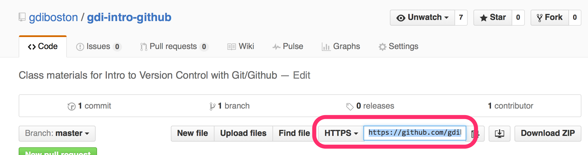
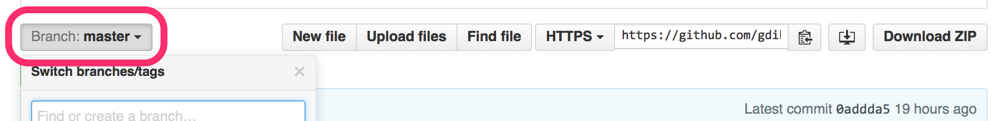
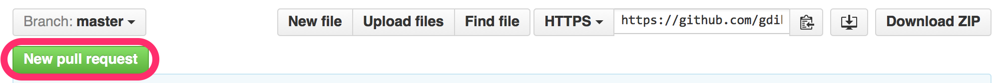
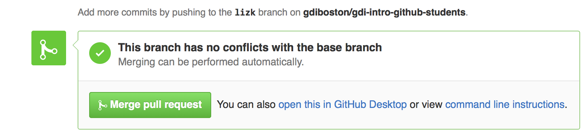

Liz Krznarich | Madhacks 2018
Find these slides (and other handy resources) at https://bit.ly/2qzrfVT
Version Control System (VCS): Software that records changes to files so that you can:
No more catastrophes!
Git: Free, open source version control system
GitHub: Code storage + sharing service based on Git that allows you to:
Create a GitHub account
https://github.comDownload + install Git
https://git-scm.com/downloadsCheck that Git is installed
git --versionAdd your name
(doesn't need to match your GitHub username)
git config --global user.name "YOUR NAME"
And the email attached to your GitHub account
git config --global user.email "YOUR EMAIL"Find the URL for your GitHub repo
Clone it your local machine
git clone https://github.com...Change directory into your local repo
cd your-repo-nameWhat's in there?
ls -laEdit README.md and save your changes
vim README.md(or open it in a text editor)
git statusCheck to see what changes Git has noticed
git status
On branch master
Your branch is up-to-date with 'origin/master'.
Changes not staged for commit:
(use "git add ..." to update what will be committed)
(use "git checkout -- ..." to discard changes in working directory)
modified: README.md git addAdds files to the Index (staging area for your next commit)
Add all changed files
git add -AAdd a single file
git add README.mdgit added something you didn't intend to?
git resetRemoves files from the Index
Remove all files
git resetRemove a single file
git reset README.mdgit commitCommits your changes to the Head
git commit -m "added README file"Push your local commits to your remote repo
git push origin masterGitHub will ask for your password whenever you push to your remote. You can cache your password, create a personal access token or connect with SSH
Edit README.md again and save
# demo-repo
This is a terrible change
Add and commit the change
git add README.mdgit commit -m "this was a terrible idea"git logShows list of commits
git log
commit 9abfae533f4fcd5c2e68ac4e5eb4179a452532cc
Author: Liz Krznarich
Date: Thu Nov 8 20:05:20 2018 -0600
this was a terrible idea
commit 603c619cf90dd9520c141d65d0f3697973bc9a8d
Author: Liz Krznarich
Date: Thu Nov 8 19:02:52 2018 -0600
Initial commit Revert to a specific commit
git reset 603c619cf90dd9520c141d65d0f3697973bc9a8dThings have gone terribly wrong?
Reset local to match remote
git reset --hard origin masterDefault: Everyone works on, commits and pushes to the master branch
Git allows users to collaborate through 2 features:
git checkout -b new-branch-namevim README.mdgit add README.mdgit commit -m "editing that readme again"Push your local changes to a new branch in your remote repo
git push origin new-branch-nameAfter a branch is pushed to the remote, it needs to be checked for conflicts and merged into the master branch to make the changes 'official'
In GitHub, request to merge your branch into master by making a Pull Request
Pull requests send a message to the remote repository owner asking to merge your branch into the master branch
Switch to your branch
Click New Pull Request
If there are no conflicts, a pull request can be merged with one click
Merging your own Pull Requests? Not a great practice.
Always get someone else to review if you can!
After pull requests are merged, always sync your local repo with the remote.
Switch to the master branch
git checkout masterPull the lastest code from the remote repo
git pull originIf you're still working on a local branch, you need to keep your branch up to date by regularly merging the latest master
Switch to your local branch
git merge masterMore topics to explore:
More Git/GitHub goodness!
Questions?
Slack #mentors
e.krznarich@orcid.org